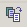
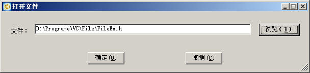
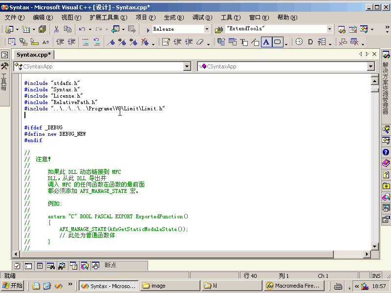
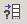

|
|
Microsoft Development Environment 扩展工具集 |
|
头文件与实现文件互换 VisualStudioNetExtendTools.Connect.SwitchCppToH 实现头文件与实现文件的相互切换。 VisualStudioNetExtendTools.Connect.IncludeFile 功能：添加头文件 
动画演试：  VisualStudioNetExtendTools.Connect.GetFileRelativePath 功能：得到相对路径，并把它这复制到剪切板。 |
|
|
版权所有(C) 2004-2006 康林工作室；保留所有权力。 |